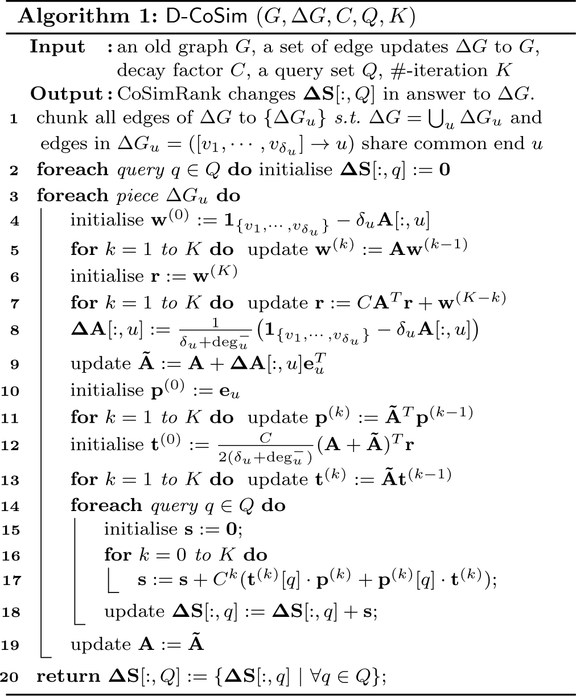
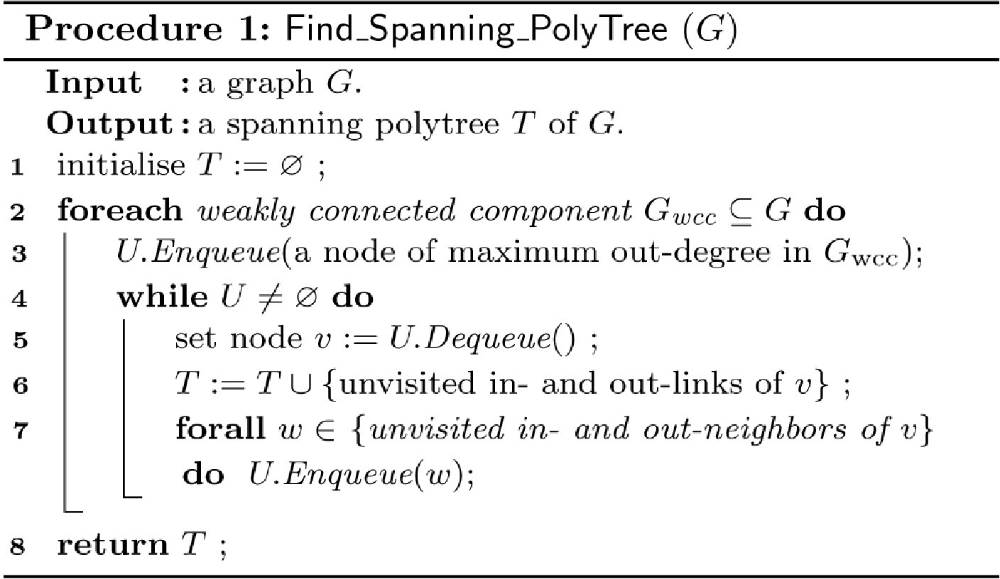
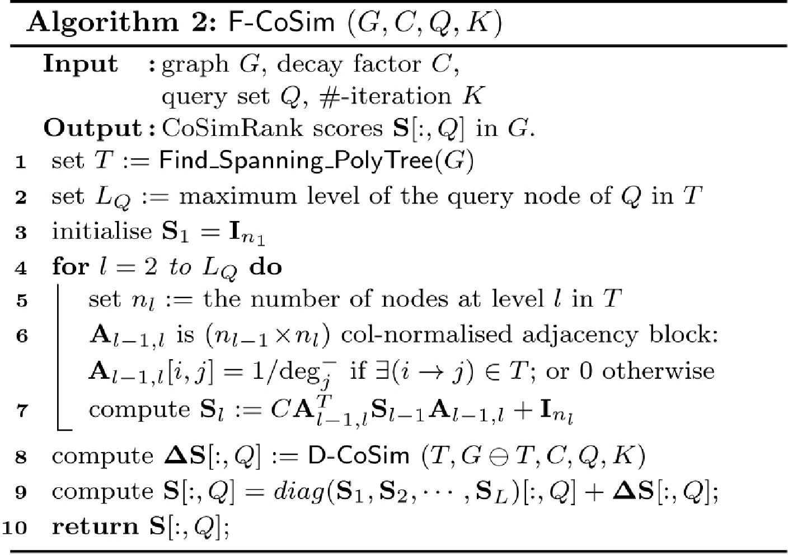

This is a web copy of https://doi.org/10.1145/3178876.3186126 Published in WWW2018 Proceedings © 2018 International World Wide Web Conference Committee, published under Creative Commons CC By 4.0 License. The modifications from the original are solely to improve HTML aiming to make it Findable, Accessible, Interoperable and Reusable. augmenting HTML metadata and avoiding ACM trademark. To reference this HTML version, use:
Permalink: https://w3id.org/oa/10.1145/3178876.3186126
DOI: https://doi.org/10.1145/3178876.3186126
WWW '18: Proceedings of The Web Conference 2018, Lyon,
France, April 2018
In real Web applications, CoSimRank has been proposed as a powerful measure of node-pair similarity based on graph topologies. However, existing work on CoSimRank is restricted to static graphs. When the graph is updated with new edges arriving over time, it is cost-inhibitive to recompute all CoSimRank scores from scratch, which is impractical. In this study, we propose a fast dynamic scheme, D-CoSim, for accurate CoSimRank search over evolving graphs. Based on D-CoSim, we also propose a fast scheme, F-CoSim, that greatly accelerates CoSimRank search over static graphs. Our theoretical analysis shows that D-CoSim and F-CoSim guarantee the exactness of CoSimRank scores. On the static graph G, to efficiently retrieve CoSimRank scores S, F-CoSim is based on three ideas: (i) It first finds a “spanning polytree” T over G. (ii) On T, a fast algorithm is designed to compute the CoSimRank scores S(T) over the “spanning polytree” T. (iii) On G, D-CoSim is employed to compute the changes of S(T) in response to the delta graph (G⊖T). Experimental evaluations verify the superiority of D-CoSim over evolving graphs, and the fast speedup of F-CoSim on large-scale static graphs against its competitors, without any loss of accuracy.
ACM Reference
Format:
Weiren Yu and Fan Wang. 2018. Fast Exact CoSimRank Search
on Evolving and Static Graphs. In WWW 2018: The 2018
Web Conference, April 23–27, 2018,
Lyon, France. ACM, New York, NY, USA 10 Pages.
https://doi.org/10.1145/3178876.3186126
Graphs are widely used to model complex objects (e.g., web pages) and their relationships (e.g., hyperlinks). CoSimRank, proposed by Rothe and Schütze [18], is a powerful similarity measure between two objects based on graph topologies. It recursively follows the SimRank-like philosophy that “two nodes are considered as similar if their in-neighbours are similar”. CoSimRank is a node-pair similarity measure, which is different from PageRank that ranks nodes only. Intuitively, a CoSimRank score s(a, b) between nodes a and b aggregates all the meeting time of two random surfers starting at a and b, in contrast to SimRank [8] that counts their first meeting time only. Thus, CoSimRank has been shown [18] to be more accurate and effective than SimRank in many applications.
Application 1 (Synonym Expansion). Synonym expansion is a useful tool in search engine query rewriting [2, 5] and text simplification [4] that replaces a target word in a sentence with another more appropriate word. The CoSimRank measure was utilised to measure the similarity of words based on the intuition that “two words that are synonyms of each other should have similar lexical neighbors”, where nodes are nouns, adjective and verbs occurring in Wikipedia, and edges denote types of syntactic configurations extracted from the parsed Wikipedias (e.g., adjective-noun, verb-object, and noun-noun coordination). They evaluated the CoSimRank similarities of words (synonyms), whose results are superior to the cosine similarity of two Personalised PageRank vectors to identify effective synonyms.
Application 2 (Lexicon Extraction). Automatically building bilingual lexicons from corpora is an important task in natural language processing. Rothe and Schütze have applied CoSimRank to lexicon extraction, and represented an English and a German text corpus as two graphs, where nodes represent words, and edges denote grammatical relationships between words. Their central intuition is that “a node in the English graph and a node in the German graph are similar (i.e., are likely to be translations of each other) if their neighbouring nodes are similar”. They initialised the CoSimRank scores using an English-German “seed” dictionary whose entries correspond to known pairs of equivalent nodes (words). Their approach produces more reliable similarity results than SimRank-based approaches [11, 22].
Despite its effectiveness, existing work on CoSimRank is restricted to static graphs. However, when the graph is updated with new edges arriving over time, it is difficult for this approach to handle quick response over dynamical graphs, due to its cost-inhibitive overheads for recomputing CoSimRank scores from scratch. This highlights our need to consider the problem of fast accurate dynamic CoSimRank search:
Problem 1 (Dynamic CoSimRank on Evolving Graphs).
To address this issue, we propose a fast accurate dynamic scheme, D-CoSim, for CoSimRank search over evolving graphs. Moreover, as an important application of D-CoSim, we show that our dynamic D-CoSim is also applicable to static graphs to achieve a huge speedup for large-scale CoSimRank search. Thus, based on D-CoSim, we also design a fast accurate static scheme, F-CoSim, to solve the following problem:
Problem 2 (Static CoSimRank on Large Graphs).
To speed up the computation of CoSimRank scores S over the static graph G, (i) F-CoSim first finds a “spanning polytree” T over G; (ii) on the “spanning polytree” T, we devise a fast approach to compute the CoSimRank scores S(T) of T; (iii) on (G⊖T), we employ D-CoSim to compute the changes of S(T) w.r.t. the delta graph (G⊖T). With these ideas, F-CoSim and D-CoSim have the following salient features:
In a nutshell, both dynamic D-CoSim and static F-CoSim allow myriads of SimRank-based applications [6, 14, 21, 30] being handled more efficiently and accurately.
Previous work on CoSimRank search focuses on static graphs. The pioneering research of [18] proposed an efficient local algorithm that computes each CoSimRank score from the sum of the dot product of two Personalised PageRank vectors. It entails O(Kdn) time and O(dn) memory to compute a single-pair CoSimRank score over a static graph with n nodes and d average degree after K iterations. However, when the graph is slightly updated, all CoSimRank scores have to be recomputed from scratch. Recently, Yu and McCann [27] have suggested an optimisation technique, namely CoSimMate, that leverages repeated squaring memoisation to cut down the number of iterations from K to ⌈log 2 K⌉ for all-pairs CoSimRank scores retrieval, but this approach requires extra O(n 2) memory to store repeated squaring results, which is impractical on large-scale graphs. Worse still, the approach of [27] is a non-local algorithm on static graphs, meaning that, even if one wishes to compute a single-pair score, all-pairs scores have to be computed simultaneously.
Regarding dynamic updating, there is no work on CoSimRank except a relatively little work on updating of SimRank, a variant of SimRank, in dynamic graphs [9, 13, 20, 25, 26]. However, when extended to CoSimRank, these work would become inefficient, due to the following reasons: First, the two state-of-art studies [9, 20] are based on random walk sampling, whose optimisation techniques heavily hinge on aggregating “only the first meeting time” of two random surfers for SimRank. If applied to aggregate “all the meeting time” of two random surfers for CoSimRank, their approaches will become slow, due to the expensive cost to sample more additional meeting paths of two coalescing random walks. Second, some work [13, 25] devised low-rank decomposition methods to update all-pairs SimRank scores, leading to O(n 2) memory to store the decomposed matrices, which is not scalable on large graphs. Worse still, these methods rest on an assumption that all pairs of old SimRank scores should be given in advance even if only a few pairs of scores need updating, which is unrealistic in practice.
There is also a growing body of research on SimRank (the variant of CoSimRank) on static graphs [6, 7, 8, 10, 13, 15, 16, 19, 23, 29]. Their optimisation techniques can be classified into three broad categories: Monte Carlo sampling [6, 10, 19, 23], matrix-based methods [7, 13], and iterative schemes [8, 15, 29]. Among them, the sampling approach, SLING [23], is the best-of-breed SimRank algorithm on static graphs. However, their techniques, if applied to CoSimRank, are not fast as the performance gain of SLING relies on aggregating only the first meeting time of two coalescing walks, as opposed to CoSimRank that aggregates all their meeting time.
There has also been much work on computing incremental Personalised PageRank (PPR) vectors [3], and dynamic Random Walk with Restart (RWR) proximities [28]. However, it is not efficient to directly apply these techniques to dynamic CoSimRank updating. This is because the CoSimRank score at iteration k is the sum of k inner products between two Personalised PageRank vectors at every iteration i = 1, 2, ⋅⋅⋅, k. Thus, to update the k-th iterative CoSimRank score, existing incremental PPR (RWR) algorithms will be repeatedly applied 2k times to update two PPR (RWR) vectors at every iteration i = 1, 2, ⋅⋅⋅, k, respectively, before summing up the k dot products of every two PPR (RWR) vectors at each iteration, which would become rather expensive.
| Symbol | Description |
|---|---|
| G | given (old) graph G |
| ΔG | update graph to (old) graph G |
| $n / \tilde{n}$ | number of nodes in old/new graph |
| $m / \tilde{m}$ | number of edges in old/new graph |
| $\deg ^{-}_i$ | in-degree of node i in (old) graph G |
| C | damping factor (0 < C < 1) |
| K | number of iterations |
| $\mathbf {A} / \tilde{\mathbf {A}}$ | old/new column-normalised adjacency matrix |
| $\mathbf {S} / \tilde{\mathbf {S}}$ | old/new SimRank matrix |
| I | n × n identity matrix |
| e i | n × 1 unit vector with only a 1 in i-th entry |
| X T | transpose of matrix X |
| X[i, : ] | i-th row of matrix X |
| X[:, j] | j-th column of matrix X |
| X[i, j] | (i, j)-th entry of matrix X |
Let us formally revisit the CoSimRank definition. Table 1 lists the main notations used throughout this paper. CoSimRank, proposed by [18], is an attractive node-pair similarity measure based on graph topologies. It is based on a recursive philosophy that “two nodes are considered as similar if their in-neighbours are similar”. Unlike SimRank [8], the CoSimRank score of each node with itself is not constantly 1. Mathematically, CoSimRank is formulated as follows:1
To evaluate one single-pair CoSimRank score, Rothe and Schütze 18 adopted a novel method to compute S[i, j]:
We first present our efficient dynamic scheme, D-CoSim, that can quickly and accurately retrieve CoSimRank scores over large evolving graphs. Next, we will show that our dynamic D-CoSim is applicable to greatly speed up CoSimRank search over static graphs, and propose our static scheme, F-CoSim.
Given an old graph G, and a set of new edges updated to G:
Figure 1 depicts old graph G (solid arrows), and an update graph ΔG (dashed arrows) to G:
The way we chunk edges of ΔG has two advantages: First, we can efficiently characterise the changes to A in answer to $\Delta {{G}_{{{u}_{i}}}}$ as a linear transformation of the ui -th column of the old A. This characterisation allows us to dynamically capture only the “refreshed areas” of CoSimRank scores in answer to the update $\Delta {{G}_{{{u}_{i}}}}$ . Second, bunching edges of ΔG facilitates sharing and reuse of common information among all the edge updates over each piece $\Delta {{G}_{{{u}_{i}}}}$ , thus discarding many unnecessary repeated computations on evolving graphs. For instance, to efficiently update CoSimRank similarities in response to each piece $\Delta {{G}_{{{u}_{i}}}}\triangleq ([{{v}_{{{i}_{1}}}},{{v}_{{{i}_{2}}}},\cdots ,{{v}_{{{i}_{\delta }}}}] \rightarrow {{u}_{i}})$ , the intermediate results to update the edge $({{v}_{{{i}_{1}}}} \rightarrow {{u}_{i}})$ , once computed, can be maximally reused to update all the other edges (e.g., $({{v}_{{{i}_{2}}}} \rightarrow {{u}_{i}}),({{v}_{{{i}_{3}}}} \rightarrow {{u}_{i}}),\cdots$ ) in $\Delta {{G}_{{{u}_{i}}}}$ . Therefore, D-CoSim is highly efficient over evolving graphs.
Having bunched all edges of ΔG into chunks, we propose an efficient approach that dynamically computes the changes to the CoSimRank scores in response to each update piece ΔGu .2 We observe that each update piece ΔGu changes only one column of A. Specifically, we show the following lemma.
Given old graph G, and an update piece to G: $\Delta {{G}_{u}} = ([{{v}_{1}},{{v}_{2}},\cdots ,{{v}_{\delta _u }}] \rightarrow u)$ , the new column-normalised adjacency matrix $\mathbf {\tilde{A}}$ of the graph (G⊕ΔGu ) can be dynamically updated from old A by replacing its u-th column with
Note that if the new $\mathbf {\tilde{A}}$ and old A are not of the same size (this case will happen when there are new nodes in ΔGu ), then prior to using Eq.(4), we should first border A with new zero-columns on the right and new zero-rows on the bottom to make it the same size of new $\mathbf {\tilde{A}}$ .
In Figure 1, old graph G has 5 nodes, so the old A is of size 5 × 5. In ΔGe = ([c, f, g] → e) there are two new nodes f and g. Thus, to update A in answer to ΔGe , we first border A to 7 × 7 with two zero columns and rows:
Then, since ${{\deg }^{-}_e}=2$ and δe = 3, in light of Eq.(3), the e-th column of A in answer to ΔGe is updated to
Leveraging Lemma 4.2, we next show how to dynamically update CoSimRank scores in answer to each piece ΔGu .
Given an old graph G, an update piece to G: $\Delta {{G}_{u}} = ([{{v}_{1}},\cdots ,{{v}_{\delta _u}}] \rightarrow u)$ , and a query node q ∈ (G⊕ΔGu ), the changes ΔS[:, q] to CoSimRank scores with respect to q are dynamically computed as
After ΔGu is updated to G, by definition in Eq.(1), the new CoSimRank scores (S + ΔS) in G⊕ΔGu satisfy
Example 3. Recall the old G (solid arrows) in Figure 1, and update piece ΔGe = ([c, f, g] → e) to G (dashed arrows). Given query q = e, number of iterations K = 3, and decay factor C = 0.6, Theorem 4.4 retrieves ΔS[:, e] as follows:
First, we compute {w (k)} and {r (k)} via Eqs.(8) and (7):
| k | w (k) | r (k) |
|---|---|---|
| 0 | [0, −1.5, 1, −1.5, 0, 1, 1] T | [0, 0, 0, 0, 0, 0, 0] T |
| 1 | [ − .25, 0, −.75, .5, 0, 0, 0] T | [ − .375, 0, 0, −.375, 0, 0, 0] T |
| 2 | [ − .375, 0, 0, −.375, 0, 0, 0] T | [ − .25, −.113, −.975, .5, −.113, 0, 0] T |
| 3 | [0, 0, 0, 0, 0, 0, 0] T | [0, −1.868, 1.075, −1.5, .116, 1, 1] T |
Next, we obtain {p (k)} and {t (k)} via Eq.(6) with r = r (3):
| k | p (k) | t (k) |
|---|---|---|
| 0 | [0, 0, 0, 0, 1, 0, 0] T | [0, .065, −.09, 0, −.105, 0, 0] T |
| 1 | [0, 0, 0, 0, 0, 0, 0] T | [0, −.045, 0, 0, −.005, 0, 0] T |
| 2 | [0, 0, 0, 0, 0, 0, 0] T | [0, 0, 0, 0, −.009, 0, 0] T |
| 3 | [0, 0, 0, 0, 0, 0, 0] T | [0, 0, 0, 0, 0, 0, 0] T |
Finally, we use Eq.(5) to derive ΔS[:, e] in answer to ΔGe :
Theorem 4.4 implies an efficient dynamic method, D-CoSim, to retrieve the changes to CoSimRank scores (Algorithm 1).

Correctness. While Theorem 4.4 guarantees the correctness of ΔS w.r.t. one piece update ΔGu only, the following theorem guarantees further that, after one piece update ΔGu is processed, other pieces being processed will not distort the correct CoSimRank results ΔS[:, Q].
Let ΔG≜{ΔG 1, ΔG 2, ⋅⋅⋅, ΔGp } be a set of edges bunched into pieces updated to the old graph G (line 1). The CoSimRank changes ΔS (line 20) returned by D-CoSim are the correct answers in response to the update graph ΔG.
Let Δ A, Δ A1 , Δ A2 , ⋅⋅⋅, Δ Ap be the changes to the column-normalised adjacency matrices w.r.t. the graph updates ΔG, ΔG 1, ΔG 2, ⋅⋅⋅, ΔGp , respectively.
In the 1st round of for-loop (lines 4–19): D-CoSim starts by viewing G 0 (≜G) as the old graph, and S0 (≜S) as the old CoSimRank scores, and update the 1st chunk ΔG 1 to G 0. Theorem 4.4 ensures that s (line 18) at the 1st round, denoted by ΔS1 , is the CoSimRank changes w.r.t. the update ΔG 1 to G 0, i.e., ΔS1 satisfies
The for-loop (lines 4–19) continues till the last chunk ΔGp is updated. In the p-th (last) round of for-loop (lines 4–18): D-CoSim regards G p − 1 (= G p − 2 + ΔG p − 1) as the old graph, and Sp − 1 (= Sp − 2 + ΔSp − 1 ) as the old CoSimRank scores, and updates the p-th chunk ΔGp to G p − 1. Theorem 4.4 ensures that s (line 18) at the p-th round, denoted by ΔSp , is the CoSimRank changes w.r.t. the update ΔGp to G p − 1, i.e., ΔSp satisfies
Finally, we check if ΔS (= ΔS1 + ΔS2 + ⋅⋅⋅ + ΔSp ) is the correct CoSimRank changes w.r.t. the update ΔG to G. Our above analysis for each round of the for-loop implies
Recall old graph G (solid arrows) and update graph ΔG to G (dashed arrows) in Figure 1. Given the query q = e, number of iterations K = 3, and decay factor C = 0.6, D-CoSim computes ΔS in answer to ΔG as follows:
First, D-CoSim chunks all edges of ΔG into three pieces: ΔG = ΔGe ∪ΔGf ∪ΔGg , according to Example 4.1.
Then, after CoSimRank changes ΔS1 [:, e] w.r.t. 1st piece update ΔGe to G 0 (= G) are derived (see Example 3):
Finally, the CoSimRank changes ΔS[:, e] w.r.t. the graph update ΔG (= ΔGe ⊕ΔGf ⊕ΔGg ) are
Complexity. We analyse the computational cost of D-CoSim. Let $\tilde{n}$ and $\tilde{m}$ denote the number of nodes and edges in new G⊕ΔG, respectively. Let δ be the number of edges in ΔG, and p be the number of update pieces {ΔGu } in ΔG. Clearly, p ≤ δ. D-CoSim has the following complexity bound:
D-CoSim requires $O(K(\tilde{m}+\tilde{n}p|Q|))$ time and $O(\tilde{m}+K\tilde{n})$ memory to dynamically compute ΔS[:, Q] after K iterations, where |Q| is the number of queries in Q.
D-CoSim runs in three phases: (1) bunching edges of ΔG (line 1), (2) {p (k)} and {t (k)} iterating (lines 4–13), and (3) online query (lines 14–18). Specifically, bunching edges of ΔG requires O(δ) time and O(δ) memory for a linear scan of all edges in ΔG. To iteratively compute {p (k)} and {t (k)}, for each query q ∈ Q and each piece update ΔGu , it entails $O(K\tilde{m})$ time and $O(\tilde{m}+K\tilde{n})$ memory for Eqs.(6)–(8). The $O(K\tilde{m})$ time is dominated by 5 matrix-vector products: A w (k − 1) (line 5), A T r (k − 1) (line 7), ${{{\mathbf {\tilde{A}}}}^{T}}{{\mathbf {p}}^{(k-1)}}$ (line 11), ${{(\mathbf {A}+\mathbf {\tilde{A}})^T}} {{\mathbf {r}}}$ (line 12), and $\mathbf {\tilde{A}}{{\mathbf {t}}^{(k-1)}}$ (line 13). The memory $O(\tilde{m}+K\tilde{n})$ is dominated by the storage of matrix A, and resulting iterative vectors. For online query, once {p (k)} and {t (k)} are computed, they are memoised and reused to compute ΔS[:, q] for every query in Q. After ΔS[:, q] is updated in answer to each piece ΔGu , all the vectors {p (k)} and {t (k)} are freed for the next piece update. Thus, for |Q| queries and p update pieces, it entails $O(K(\tilde{m}+\tilde{n}p|Q|))$ time and $O(\tilde{m}+K\tilde{n})$ memory in total.
Theorem 4.7 guarantees the high efficiency of D-CoSim for dynamic CoSimRank search, whose speedup is achieved by (a) our characterisation of the “refreshed areas” ΔS[:, q] in terms of only the linear combination of {p (k)} and {t (k)}, and (b) maximally reusing and sharing common intermediate results in answer to the edge updates on each piece ΔGu . In comparison, the existing approach by [18] requires $O(K(\tilde{m}+\tilde{n}))$ time to compute only a single-pair $\mathbf {\tilde{S}}[i,j]$ per edge update via Eqs.(2) and (3) from scratch, leading to $O(K(\tilde{m}+\tilde{n}|Q|)\tilde{n}\delta)$ total time to compute $\mathbf {\tilde{S}}[:,Q]$ ($\tilde{n} \times |Q|$ pairs) for δ edge updates, which is rather expensive.
Apart from supporting quick dynamic CoSimRank retrieval on evolving graphs, D-CoSim can also be applied to static graphs for accelerating CoSimRank search. Based on D-CoSim, we next propose an efficient scheme, F-CoSim, that greatly speeds up CoSimRank search over static graphs. Given a static graph G and a query set Q, F-CoSim retrieves the CoSimRank scores S[:, Q] over G based on three ideas: First, we propose a fast method to find a “spanning polytree” T of G so that G is decomposed into G = T⊕(G⊖T), which can be viewed as the old T plus its update (G⊖T). Next, on T, due to its special “polytree” structure, we notice that the CoSimRank scores are relatively easier to compute, and we propose a novel fast algorithm to retrieve the CoSimRank scores S(T)[:, Q] over the “spanning polytree”. Finally, we apply our dynamic D-CoSim to compute S(T) changes in response to the graph update (G⊖T). With the above ideas, F-CoSim enables a notable speedup in CoSimRank search over static graphs, which is achieved by our efficient method to retrieve S(T)[:, Q] over the “spanning polytree” and our fast D-CoSim to compute the changes to S(T) w.r.t. (G⊖T).
In the following, we shall elaborate on these ideas.
A spanning polytree T of a connected graph G is a subgraph of G that includes every node of G (i.e., spans G), with a maximal set of edges of G that contains no undirected cycles if we replace all the directed edges of T with undirected edges.
Intuitively, in contrast with the traditional definition of the spanning tree in which each node has only one parent node, our spanning polytree is a generalised notion of the spanning tree from undirected graphs to directed ones, in which each node may have more than one parent nodes. The reason we introduce the spanning polytree is that, when G is a directed graph, its traditional spanning tree does not always exist, but there always exists a spanning polytree of G. For instance in Figure 2, there are no conventional trees that span G, but one can find a polytree T that spans G. If G is an undirected graph, the spanning polytree in Definition 4.8 reduces to the traditional spanning tree.
To identify a spanning polytree T over a given graph G, we devise a fast heuristic approach based on breadth first search (BFS) in Procedure 2 . The complexity of Procedure 2 is dominated by the BFS search, which is O(n + m) time and O(n + m) memory on a graph with n nodes and m edges.

Having identified the spanning polytree T of the graph G, we can decompose G into two parts: G = T⊕(G⊖T). Due to the special acyclic structure of T, there is a more efficient way to retrieve CoSimRank scores of the spanning polytree T. Our key observation is that, if the nodes of T are organised in level order, the adjacency matrix A of T will exhibit a block superdiagonal structure, leading to the CoSimRank scores of T, S(T), displaying a block diagonal structure. Consequently, any two nodes at different levels of T have zero CoSimRank scores. Moreover, the CoSimRank scores of the nodes at the same level of T can be immediately derived from those at the previous level, based on the following theorem:
Given a polytree T with nodes organised in level order, let nl be the number of nodes at level l (l = 1, ⋅⋅⋅, L), the CoSimRank scores of T, S(T), is computed level by level:
Since T is a polytree, two surfers starting at different levels cannot meet at a common node via equal-length steps. Thus, only node-pairs at the same level have nonzero scores, leading to the block diagonal structure of S(T).
To compute l-th diagonal block S l , by Eq.(1), we have
Theorem 4.9 gives a fast and accurate approach for CoSimRank search on a spanning polytree in a level-by-level style. The CoSimRank scores at level l are immediately computed from those at level (l − 1). To retrieve each block S l at level l via Eq.(19), it requires only O(nl (n l − 1 + nl )) time and $O(n_l^2)$ memory, as opposed to the original method entailing O(K(m + n)nl ) time and O(m + n) memory to retrieve $n_l^2$ pairs of S l scores. Since nl ≪ n = n 1 + n 2 + ⋅⋅⋅ + nL , the complexity improvement of our approach is significant.
Consider the spanning polytree T in Figure 2. Theorem 4.9 computes the CoSimRank S(T) of T as follows:
As Level 1 of T has two nodes {a, b}, Eq.(19) initialises
Since ${{\mathbf {A}}_{1,2}}=\left[
{{\begin{array}{*10c}.5 & 0 \\ .5 & 0
\\\end{array}}} \right]$ and $ {{\mathbf
{A}}_{2,3}}=\left[ {{\begin{array}{*10c}1 & .5 &
1 \\ 0 & .5 & 0 \\\end{array}}}
\right]$ , the CoSimRank similarity of
nodes {c, d} at Level 2 is computed
from S 1:
Next, the CoSimRank similarity of nodes {e, f, g} at Level 3 is computed from S 2:
CoSimRank on Static Graph G. After the CoSimRank S(T) of the polytree T is computed, F-CoSim next computes the CoSimRank changes ΔS w.r.t. the graph ΔG (= G⊖T), by utilising our dynamical D-CoSim algorithm in Section 4.1. Finally, the two parts (S(T) and ΔS) are added together, which produces the CoSimRank S of the original graph, i.e.,
Based on the above ideas, Algorithm 3 provides our complete static scheme, F-CoSim, which incorporates Theorem 4.9 and our dynamic D-CoSim scheme. F-CoSim consists of three phases: (i) finding a spanning polytree T over G (line ), (ii) retrieving CoSimRank S(T) on T (lines –), (iii) computing CoSimRank changes ΔS in answer to (G⊖T) (lines –).

Recall G in Figure 2. To retrieve S[:, c] on G, F-CoSim first decomposes G = T⊕(G⊖T). Then, it computes the CoSimRank S(T)[:, c] of T, as shown in Example 4.10:
Next, F-CoSim invokes D-CoSim (Line ) to compute the CoSimRank increment ΔS[:, c] w.r.t. delta graph (G⊖T):
Finally, the CoSimRank score S[:, c] of G (Line ) is
Correctness. We next show that F-CoSim correctly returns the CoSimRank scores S[:, Q] on G.
Given graph G, the resulting S returned by Line of F-CoSim is the correct CoSimRank scores over G.
Let S(T) be the CoSimRank of the polytree T, and A(T) be the column-normalised adjacency matrix of T. According to Line of F-CoSim, after T is retrieved from G, the column-normalised adjacency matrix A of G is decomposed into two parts (A(T) and ΔA):
Moreover, our correctness proof of D-CoSim in Theorem 4.5 guarantees that, by viewing T as the old graph, and (G⊖T) as the graph update to T, the value of ΔS, from calling D-CoSim (Line 8 of F-CoSim), is the correct CoSimRank increments w.r.t. the update (G⊖T) to T. That is, ΔS satisfies CoSimRank definition:
Complexity. Given Q, the time of F-CoSim in each phase is O(n + m), $O(\sum _{l=2}^{L_Q}{n_l(n_{l-1}+n_l)})$ , O(K(m + np ⊖|Q|)), respectively, where LQ is the maximum level of the query node of Q in T, and p ⊖ is number of update pieces in ΔG. Since LQ ≤ L ≪ n, n l − 1 + nl ≪ n, and p ⊖ ≪ m − n in practice, it requires $O(n\max \nolimits _{2 \le l \le L_Q}\{ n_{l-1}+n_l\} + K(m+np_{\ominus } |Q|))$ time in total, as opposed to the O(Kn(m + |Q|n)) time of the original method to assess n × |Q| pairs of scores S[:, Q].
The memory space of F-CoSim in each phase is O(m + n), $O(m+\sum _{l=1}^{L_Q}{{n_l}^2})$ , O(m + Kn), respectively. Thus, the total memory is bounded by $O({m}+(K+\max \nolimits _{1 \le l \le L_Q}\{ n_l\}){n})$ .
Our evaluations on various datasets verify the superiority of D-CoSim in dynamic graphs and F-CoSim in static graphs.
The performance efficiency is evaluated by three metrics:
(a) Running Time. On dynamic graphs, D-CoSim quickly answers CoSimRank search. On static graphs, F-CoSim is much faster than the best-known CoSimRank approaches.
(b) Memory Space. Both D-CoSim and F-CoSim require only linear memory, and scale well on million-node graphs.
(c) Accuracy. D-CoSim and F-CoSim do not compromise any accuracy for speedup.
Datasets. We adopt the following public datasets:
| Datasets | #-Nodes | #-Edges | Type | |
|---|---|---|---|---|
| as-735 | (AS) | 7,716 | 26,467 | Undirected |
| ca-HepPh | (HP) | 12,008 | 237,010 | Undirected |
| email-EuAll | (EE) | 265,214 | 420,045 | Directed |
| web-Google | (WG) | 916,428 | 5,105,039 | Directed |
| wiki-Talk | (WT) | 2,394,385 | 5,021,410 | Directed |
| soc-LiveJournal | (LJ) | 18,520,486 | 298,113,762 | Directed |
To simulate real evolution on dynamic graphs, we use RTG (Random Typing Generator) [1] to generate |ΔG| dynamic updates following linkage generation models [12, 17].
All experiments are conducted on a PC with Intel Core i7-6700 3.40GHz CPU and 64GB memory compiled by VC++.
Compared Algorithms. We implemented our D-CoSim (dynamic) and F-CoSim (static), and compared them with two state-of-art CoSimRank competitors: (a) CSR, a method by [18] that retrieves a CoSimRank score from the sum of the dot product of two Personalised PageRank vectors; (b) CSM, a repeated-squaring method by [27] that cuts down the number of CoSimRank iterations.
Parameters. We chose the following parameters by default: (a) the decay factor C = 0.8 and (b) the number of iterations K = 5, as previously used in [18].
5.2.1 Time Efficiency. Figure 3 depicts the time efficiency of D-CoSim on several dynamic graphs. On each dataset, we randomly select |Q| = 500 queries, and build |ΔG| = 1000 new edge updates. Figure 3a compares the time of D-CoSim against CSR and CSM to compute CoSimRank changes per update for each query. We see that D-CoSim is consistently 3-5 order-of-magnitude faster than CSR (resp.118x faster than CSM). This is because D-CoSim leverages Theorem 4.4 that evaluates only the refreshed areas of CoSimRank scores in response to graph updates, without the need to recompute all scores from scratch. Moreover, unlike CSM crashes on large datasets (e.g., WT, LJ) due to insufficient memory for repeated squaring memoisation, D-CoSim can update their scores within one second. Figure 3b further depicts the time of D-CoSim w.r.t. |ΔG|. As |ΔG| grows from 500 to 3000 on each dataset, the time of D-CoSim is increasing mildly, highlighting its scalability w.r.t. the number of edge updates. It is consistent with the time complexity in Theorem 4.7 where D-CoSim is linear to the number of update pieces p (≤ δ).
Figure 4 shows the time efficiency of F-CoSim on static graphs. Due to space limitations, we only report the results on three datasets, and the trends on other datasets are similar. Figure 4a compares the time of F-CoSim with CSR and CSM on each dataset. We discern that F-CoSim always outperforms CSR with a speedup up to 9.8x (on EE). Thus, the use of our spanning polytree for fast CoSimRank search is effective (Theorem 4.9). On HP dataset, CSM is the fastest, but this method only survives on small-scale graphs, due to its high memory storage for repeated squaring. In contrast, F-CoSim scales well on million-edge graphs (e.g., WT, LJ).
Since F-CoSim encompasses three phases (Algorithm 3), Figure 4b details the time allocated in each phase per dataset. We see that, among these phases, Phase 2 (computing S(T) on spanning polytree T) takes the smallest portion; Phase 1 (finding T from G) the second smallest; Phase 3 (computing ΔS w.r.t. G⊖T) the largest. This agrees well with our complexity analysis of Algorithm 3, where the time of Phase 2, $O(\sum _{l=2}^{L_Q}{n_l(n_{l-1}+n_l)})$ , is independent of the graph size n, unlike Phases 1 and 3 that hinge on n (≫ nl ).
5.2.2 Memory Efficiency & Scalability. Figure 5 depicts the memory efficiency of D-CoSim and F-CoSim on six real datasets as compared with CSR and CSM. On each dataset, we randomly select |Q| = 500 queries. For dynamic graphs, we generate |ΔG| = 1000 new edge updates to each dataset. Figure 5a reports the memory of D-CoSim for ΔG updates to each dataset w.r.t. the query set Q. We see that D-CoSim and CSR have comparable memory; both increase linearly with the growing size of graphs, highlighting the scalability. On small datasets (e.g., AS, HP) when CSM does not fail, the memory of D-CoSim is almost 2.5 orders of magnitude smaller than CSM. This is because D-CoSim requires only linear memory to store auxiliary vectors, as opposed to the O(n 2) memory of CSM for repeated squaring. In Figure 5b, the memory of F-CoSim on static graphs shows the similar tendency. Figure 5c shows the memory usage at each phase of F-CoSim on each dataset. We see that Phase 1 (finding T) has the lowest memory as it is based on linear BFS search. Phase 2 (computing S(T) on T) requires larger memory than Phase 1, due to its overheads to store the resulting S(T)[:, Q]. These agree with our memory analysis in Algorithm 3 .
5.2.3 Accuracy. We evaluate the accuracy of D-CoSim and F-CoSim, relative to the original CSR, on real datasets. We randomly pick up various query sets with its size |Q| varying from 1000 to 3000. For each query set Q, based on the CoSimRank scores S[:, Q] from D-CoSim (resp.F-CoSim), we measure their similarity ranking results via NDCG (Normalised Discounted Cumulative Gain) [24]:
This paper presents a dynamic scheme, D-CoSim, for fast accurate CoSimRank retrieval on evolving graphs. We also apply D-CoSim to static graphs, by proposing F-CoSim to speed up large-scale static CoSimRank retrieval. On dynamic graphs, we devise a novel approach that (a) bunches all edges of ΔG into pieces {ΔGi } and (b) characterises only the CoSimRank changes in answer to each piece update ΔGi as the linear combination of vectors, thus discarding unnecessary computations. D-CoSim retrieves CoSimRank quickly and accurately on dynamic graphs, with no need to reassess them from scratch. On static graphs, our fast accurate algorithm, F-CoSim, greatly speeds up CoSimRank retrieval based on three ideas: Given graph G, we (a) find a “spanning polytree” T of G; (b) design an efficient algorithm to retrieve CoSimRank scores S(T) over T; and (c) apply D-CoSim to evaluate the changes to S(T) in answer to delta graph (G⊖T). Our empirical studies on various real datasets demonstrate that (a) D-CoSim is 3–5 orders of magnitude faster than the best-known competitors on large dynamic graphs; (b) F-CoSim outperforms the state-of-the-art approaches on static graphs with a speedup up to 9.8 times; (c) D-CoSim and F-CoSim retain comparable linear memory, and scale on million-node graphs, with no compromise of any accuracy for speedup.
1In comparison, SimRank [8] is defined as: S = max {C A T S A, I}.
2In the following, $\Delta {{G}_{{{u}_{i}}}} = ([{{v}_{{{i}_{1}}}},{{v}_{{{i}_{2}}}},\cdots ,{{v}_{{{i}_{\delta }}}}] \rightarrow {{u}_{i}})$ is abbreviated to $\Delta {{G}_{u}} = ([{{v}_{1}},{{v}_{2}},\cdots ,{{v}_{\delta _u}}] \rightarrow u)$ for simplicity.
This paper is published under the Creative Commons Attribution 4.0 International (CC-BY 4.0) license. Authors reserve their rights to disseminate the work on their personal and corporate Web sites with the appropriate attribution.
WWW '18, April 23-27, 2018, Lyon, France
© 2018; IW3C2 (International World Wide Web Conference
Committee), published under Creative Commons CC-BY 4.0
License. ACM ISBN 978-1-4503-5639-8/18/04.
DOI: https://doi.org/10.1145/3178876.3186126